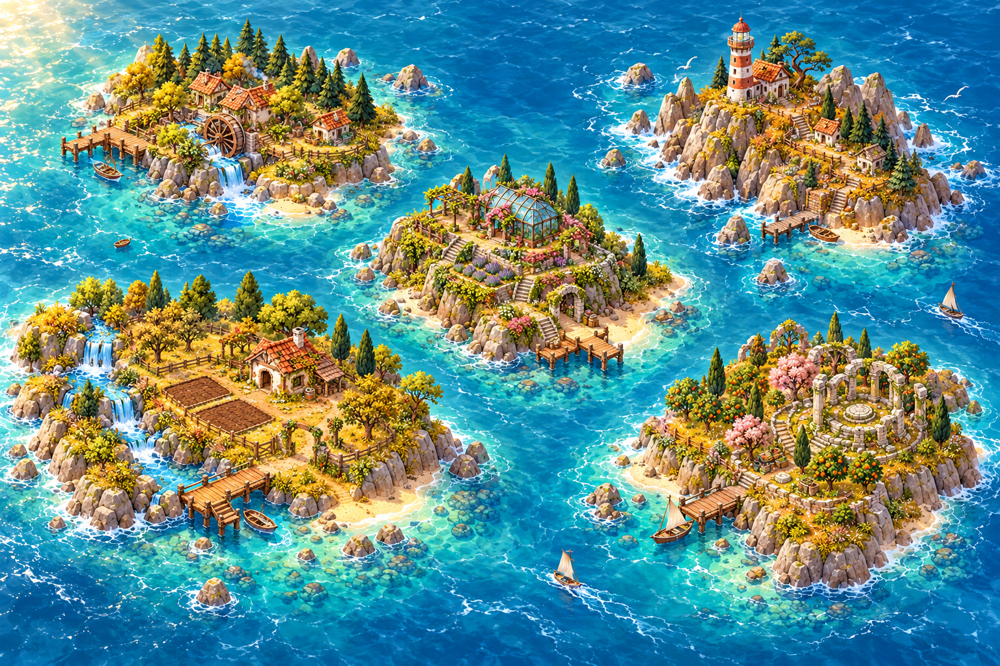

MOCHI
MOCHI A LITTLE CODE. A WHOLE WORLD.
Your adventure starts here.
Five islands to discover. One small step at a time.
05ISLANDS
1 AVAILABLE NOW
1 AVAILABLE NOW

YOUR WORLD, WAITING TO COME ALIVE ✧ N
01
ISLAND 01 · AVAILABLE NOW
Getting started with Python
Meet Mochi. Print your first message, store values, try calculations and write comments.